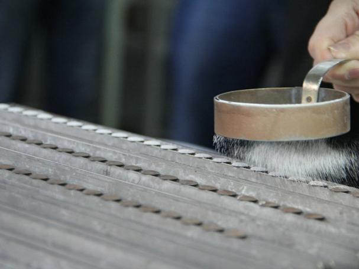
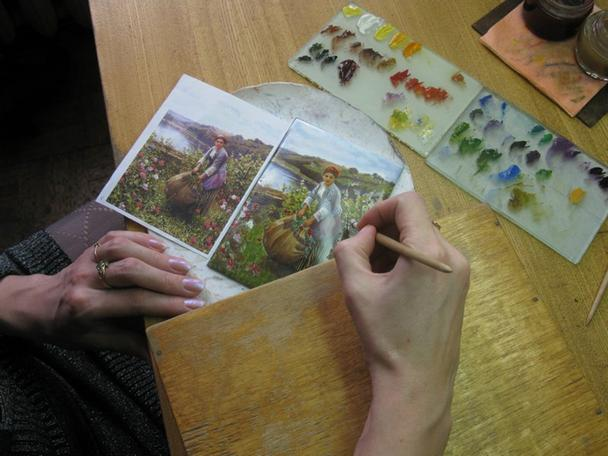

Искусство финифти — украшения эмалью — зародилось несколько тысяч лет назад на Востоке. Этот способ стал известен случайно, как побочное открытие во время плавки стекла. На Русь финифть пришла из Византии в X веке, где ее называли «огненным письмом». Русские ювелиры освоили новую технику и стали украшать ею иконы, церковную утварь и оклады религиозных книг. Позднее московские мастера декорировали эмалями небольшие бытовые предметы: статуэтки и шкатулки, ручки и чернильницы, часы, табакерки и столовые приборы. Несведущие люди считали, что финифть производят из расплавленных драгоценных камней, настолько красивой и яркой она была.
В XVII веке технологию значительно усовершенствовал французский ювелир Жан Тутен, он открыл секрет полупрозрачных огнеупорных красок.  С тех пор процесс состоял из трех этапов: сначала мастер готовил белую эмалевую основу, затем наносил рисунок и вставлял изделие в оправу. Пластину для основы вырезали из листа металла. Использовали медь, бронзу, латунь, серебро или золото. Затем ей придавали нужную форму, добиваясь идеально ровной поверхности, чтобы «навести белизну» — нанести на металл слой размолотого стеклянного порошка. Заготовку отправляли в печь, на выходе получалась гладкая поверхность белого цвета. Обратную сторону тоже покрывали стеклянным составом, чтобы при обжигах пластина не деформировалась.
В таком виде заготовка попадала к художнику. На выпуклой стеклянной части он изображал огнеупорными красками из стекловидного порошка миниатюры и орнаменты. Техника была схожа с росписью фарфора: художник работал небольшой кистью и мазок за мазком наносил рисунок. Мастер намечал общий план изображения, отправлял изделие в печь, охлаждал, а затем выписывал тонкие детали и добавлял новые цвета. Каждый слой краски закаляли при температуре около 700–800 градусов. Обычно художники ограничивались тремя обжигами, но некоторые сюжеты требовали до пяти подходов. Краски в печи плавились, получалась блестящая глянцевая поверхность, которая не нуждалась в дополнительном закреплении.
Материалы для ремесла стоили дорого. В состав красок входили соли металлов: соли меди придавали красивый зеленый оттенок, кобальта — синий, добавление золота позволяло получить сияющие пурпурные и рубиновые цвета. Технология требовала мастерства: исправить нанесенный на эмаль рисунок нельзя, одно неверное движение кисти могло испортить всю работу. А сами пигменты в печи меняли цвет — если ошибиться с температурой и временем обжига, замысел художника мог не воплотиться.
Готовую финифть вставляли в оправу из серебра или другого металла. Часто ею служила филигрань — тонкий кружевной узор из проволоки. Финифть не меняла цвет с годами, ей была не страшна влажность и высокая температура. Единственный недостаток изделия — хрупкость. Крупные украшения нуждались в бережном обращении, хотя небольшие предметы оставались довольно прочными и легко переносили удары. Драгоценные камни могли поцарапать эмалевый слой, поэтому финифть хранили отдельно от других украшений.